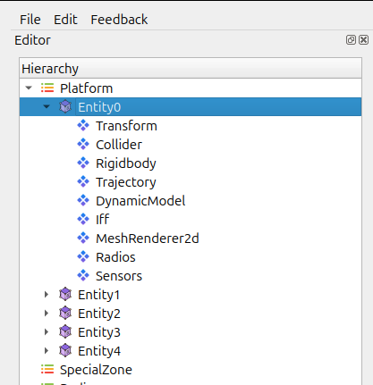
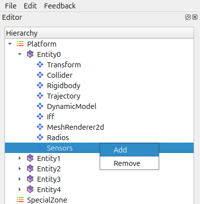
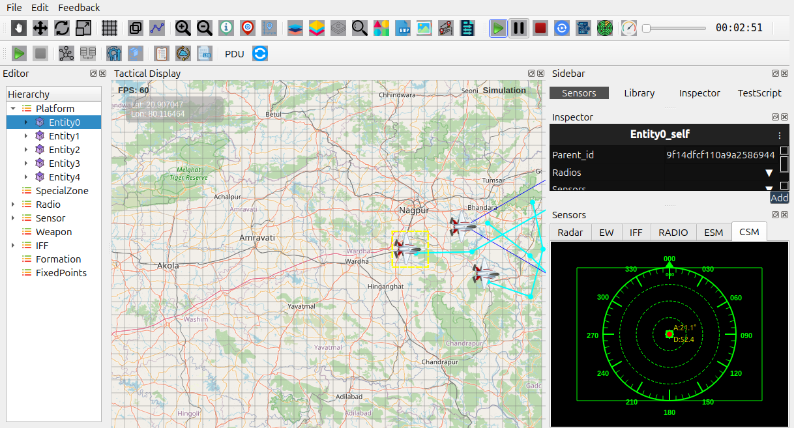

CSM (Command / Control / Combat System Manager)
The CSM manages core system behaviour for an entity, including coordination between subsystems such as sensors, and radios. It acts as the central controller that drives AI behaviour and combat decisions.
Purpose of CSM
The CSM helps you:
Manage the operational state of an entity.
Control the engagement workflow (detect → track → engage).
Coordinate sensors, radios, and other connected systems.
Provide a unified pipeline for AI and automated decision making.
Adding a CSM to an Entity
Select the entity in the Hierarchy.
{kind=link}

Open the entity’s context menu.
{kind=link}

Choose Add Sensor then Choose CSM from Dropdown.

The CSM appears in the entity’s component list.
CSM Configuration
Once the CSM is added, you can configure:
Range of Detection
Linked sensors and weapon systems
How the CSM Works
Continuously monitors incoming sensor data.
Evaluates potential targets using rules from profiles or settings.
{kind=link}

Notes
CSM effectiveness depends heavily on sensor accuracy and correct Radio setup.